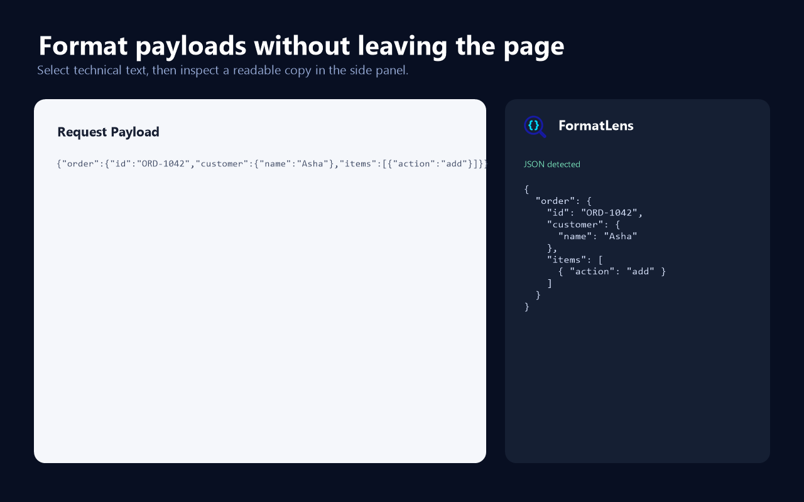

Select
Highlight text, focus a field, or use Pick element on the page.
Browser extension for technical text
Select JSON, logs, or technical text on a webpage and inspect a clean Pretty, Tree, or Raw view in the side panel—without losing your place.
{
"order": {
"id": "ORD-1042",
"customer": {
"name": "Asha"
},
"status": "ready"
}
}Simple by design
FormatLens stays beside the webpage, so you can inspect the content without copying it into another service.
Highlight text, focus a field, or use Pick element on the page.
Launch FormatLens and extract the content you chose.
Switch between Pretty, Tree, and Raw views, then search or copy exactly what you need.
Built for real payload work
Useful for ServiceNow request payloads, API responses, logs, configuration values, escaped JSON, and JSON nested inside strings.
